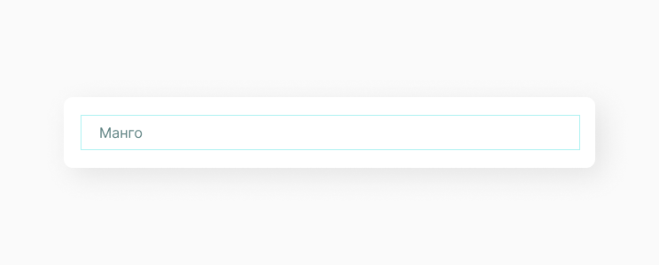
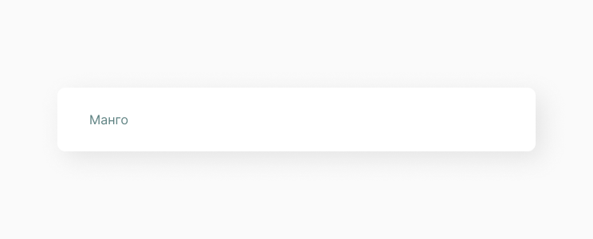
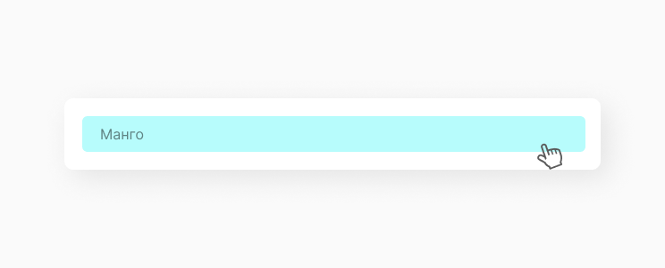
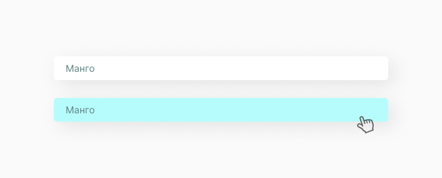

Option Item
HTML элемент option item используется для определения пункта списка контейнера.
Структура компонента
Option Item является частью структуры option list, и может содержать в себе различные типы данных: иконку, текст, картинку, в зависимости от назначения option list. В данном примере рассматриваем стандартный option item с текстовой меткой. Обычно option item имеет собственные отступы и hover при наведении курсора. Все стили создаются в отдельном файле, чтобы придерживаться принципа проектирования компонента в изоляции.
Состояние компонента
Так как option item является малой функциональной частью структуры select, в которую входит option list как коллекция, мы выделяем только анимацию hover, при наведении на элемент списка.
 Реализация
Создаём папку с названием A_OptionItem.jsx. Стоит уточнить, что мы не используем тег <option>, вместо него создаём <div> с классом A_OptionItem и устанавливаем необходимые для реализации заявленной функциональности атрибуты.
import React, { PureComponent } from 'react'
import './A_OptionItem.css'
export default class A_OptionItem extends PureComponent {
constructor(props) {
super(props)
}
render() {
const { id, value, onSelect } = this.props
return (
<div className="A_OptionItem" onClick={() => onSelect(id, value)}>
{value}
</div>
)
}
}Теперь задаём стили для option item.
.A_OptionItem {
padding: 11px 20px 10px;
font-family: 'Inter', Helvetica, Arial, sans-serif;
font-size: 20px;
color: #426060;
font-weight: 300;
border-radius: 6px;
}
.A_OptionItem:hover {
background-color: #5be7e7;
}Мы создали компонент, но описали только его функционал, теперь его нужно отрендерить. Попробуй теперь этот компонент вывести согласно своей структуре проекта. Ты можешь увидеть как это делаем мы, а также посмотреть получившийся option item.
import React from 'react'
import ReactDOM from 'react-dom'
import A_OptionItem from '../../components/atoms/A_OptionItem/A_OptionItem.jsx'
document.addEventListener('DOMContentLoaded', () => {
ReactDOM.render(
<A_OptionItem value={'Арбуз'} />,
document.body
)
})Получаем следующий результат:
Составляющие
Этот компонент часто выводится в следующих компонентах